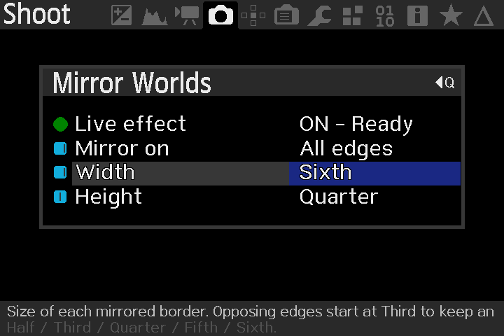
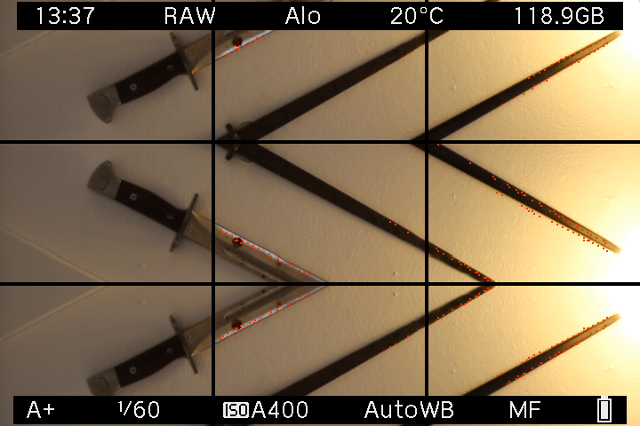
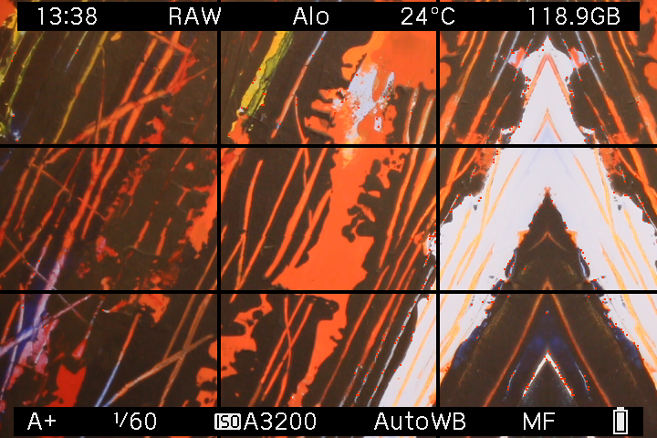
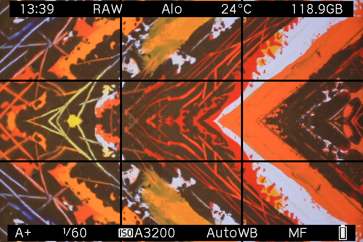

FIRST PUBLIC RELEASE · 0.2.0
Meet your
other side.
A new way to see through your original Canon EOS M. Fold the scene, find a reflection, and make something a little unexpected.
Download Mirror WorldsFree & open source. Magic Lantern required.
 A DIFFERENT
A DIFFERENTPOINT OF VIEW.
Developed & tested on
the original Canon EOS M.
Canon firmware 2.0.2
Magic Lantern dev 2025-06-20
01 / THE IDEA
Less ordinary.
More in-camera.
Make impossible architecture. Invent a second horizon. Turn a familiar corner into something you haven’t seen before.
Mirror Worlds shows your reflections in LiveView. Press the normal shutter button and the effect is already in your Canon CR2 RAW photo. Review it on the camera and keep shooting.
Your focus and Auto ISO still work. Your last settings come back when you restart.
FROM THE CAMERA
Straight from
the EOS M.
The controls. The view. Real on-device screenshots by MAXmade, with the camera overlays intact.








Screen captures, not exported CR2 photos. Select any screenshot to see it at full size. The interactive previews below use an illustrative scene.
02 / FIND YOUR FOLD
What if you
mirrored here?
Pick an edge. Change the size.
See where the scene takes you.
Size means each mirrored border. Opposing edges start at Third, leaving an original center.
JPG, PNG or WebP. Stays in your browser.
These are browser illustrations, not photos captured with the module. The starting scene is AI-generated; the mirrors are calculated by this page. Mirror Worlds itself uses no AI.
03 / SMALL CHANGES, STRANGE PLACES
One scene.
A few other worlds.
Seven placements. Sizes from half to sixth.
There’s plenty of room to play.
04 / CAMERA IN HAND
A little setup.
Then just shoot.
You don’t need to build code or export from a menu. Install the module once, then use your camera.
Read the full guide- 01
Check your EOS M.
You need the original Canon EOS M with firmware 2.0.2 and Magic Lantern already installed. The tested ML build is dev 2025-06-20.
New to Magic Lantern? Start here ↗ - 02
Copy one file.
Download 0.2.0 and unzip it. With the camera powered off, copy
mirror.mofromML/MODULESinto that same folder on your card. - 03
Enable the module.
Put the card back. In Magic Lantern’s Modules tab, enable mirror.mo, then restart your camera. Keep other MAXmade effects off.
- 04
Choose a fold. Take a photo.
Open Shoot → Mirror Worlds. Turn Live effect ON, choose your edges and sizes, close the menu and press the physical shutter. Release between photos.
YOUR STARTING POINT
An EOS M.
And a curious eye.
Developed on and tested on the original Canon EOS M. Other Canon cameras, including other EOS M models, have not been validated.
- Camera
- Original Canon EOS M · firmware 2.0.2
- Magic Lantern
- Dev build 2025-06-20 · EOSM.202
- Tested shooting setup
- A+ · Auto ISO · Canon RAW · single-shot drive
- LiveView
- Native 1× view · Global Draw ON
This is a module for an existing Magic Lantern installation. The download does not replace your Canon firmware or Magic Lantern core.
A FEW GOOD QUESTIONS
Before you head out.
Is the effect really in the RAW?
Yes. The module reflects the sensor samples before Canon writes the CR2. You use the normal shutter button, and Canon handles immediate review and playback. There is no TIFF or DNG conversion, and the module doesn’t create a companion original.
Do I need manual ISO or manual focus?
No. The tested setup uses A+ and Auto ISO. Canon autofocus and exposure continue to work while you compose with the mirror.
Will it remember my settings?
Yes. ON/OFF, mirror placement, width and height save automatically. Leave it ON and it resumes when LiveView is ready after restart. You don’t need a separate save action.
Why can’t I choose Half for opposing edges?
Two half-width borders would leave no original center to reflect. Left + Right, Top + Bottom and All edges therefore start at Third. A single edge can still use Half.
Can I shoot bursts or video?
This release is for single RAW photos. Release the shutter between shots. More mirrored area may take longer to process. Continuous drive, remote triggering, video and long exposures are outside the supported workflow.
MIRROR WORLDS / 0.2.0
Go find
the other side.
Made for the original Canon EOS M.
Free to use. Open to explore.